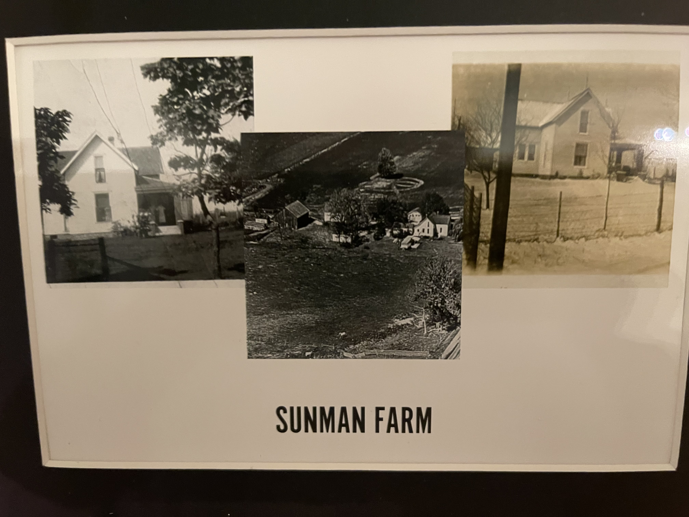
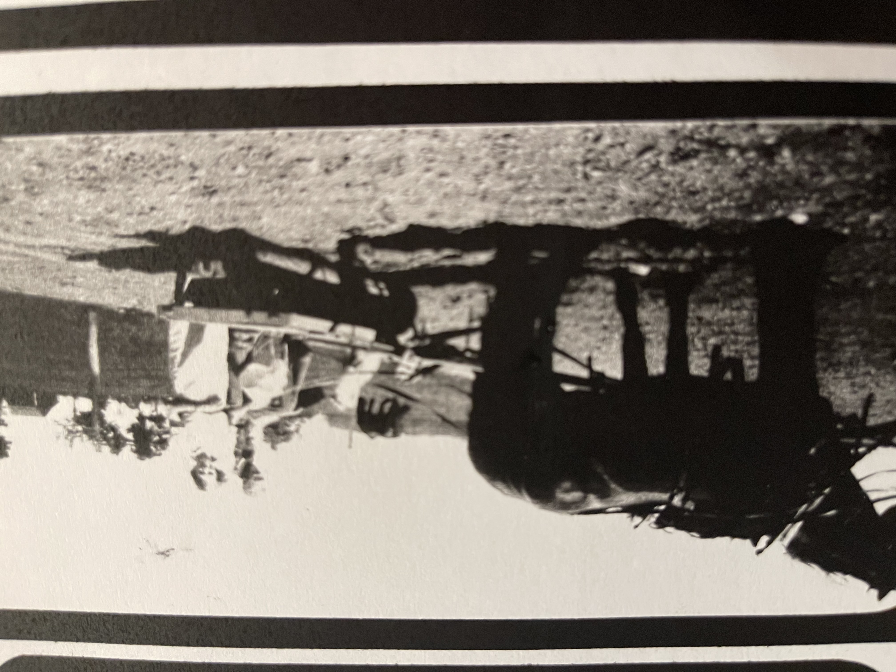

Family Ancestry paragraph
My Sunman family is from England and moved here in America or to be more specific Indiana in 1819. They in fact did not go to a city instead they went to live a farm style of life. The farm stayed with the family from 1835 up until 1961 which is when grandmother Susan Dolson (Who I am interviewing) was a kid on the farm. The pull factors for them coming to America was prosperity and overall the American dream. One interesting fact is that my family had a town in Indiana named after them, the town is called Sunamn and is in Sunman, Indiana.

